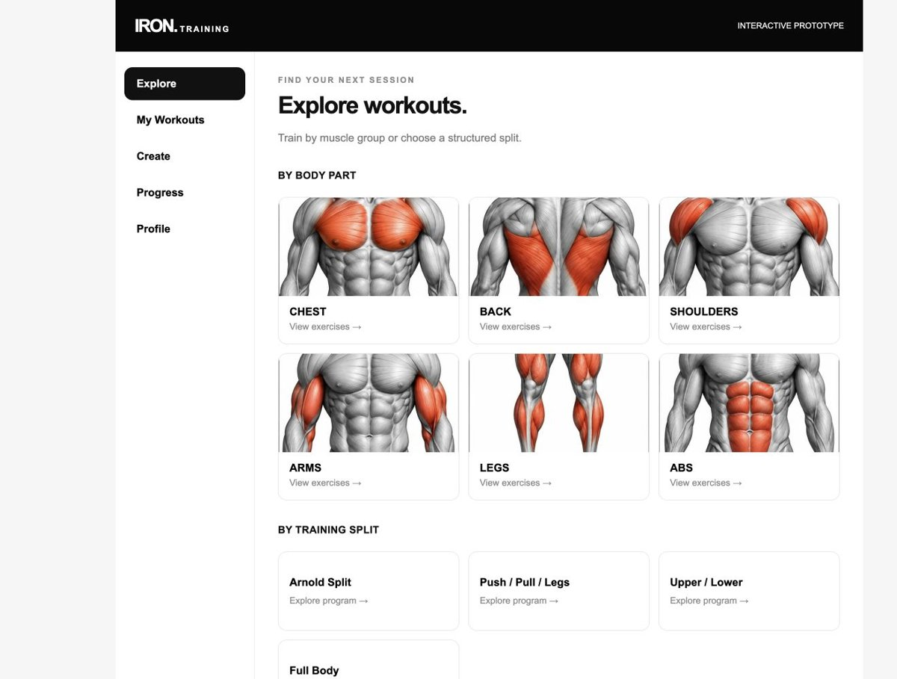

02 / PROJECT NOTES
IRON Training.
A mobile-friendly workout planning and tracking prototype that connects exercise discovery, custom routines, and session history.
The goal
Make the next workout easier to plan and record, with a direct path from exercise discovery to a saved training session.
Architecture
The public repository is a static HTML/CSS/JavaScript application. Vercel hosts the illustrated web prototype; the original GitHub Pages link is retained as an alternate experience.
Implementation
The source includes muscle-group exploration, training splits, goal filtering, custom routine creation, weight and repetition logging, and a progress view. Workout history and custom routines are saved in browser localStorage.
The live illustrated version was reviewed separately. It presents muscle-group cards, program exploration, and a compact navigation structure. Repository and deployed versions may differ.
Challenges & decisions
A compact interface for a repeated task
Explore, My Workouts, Create, Progress, and Profile separate the main activities. Responsive layouts and exercise illustrations support discovery on a small screen.
Persistence with a clear boundary
Browser storage enables a self-contained prototype without account setup. It is device-local and can be cleared by the browser; no cloud synchronization or production authentication is claimed.
Results & current scope
A publicly accessible web prototype with workout planning and local persistence. An iPhone app was reported in the project brief, but no native iOS source was found in this public repository. Native architecture and App Store availability remain unverified.
